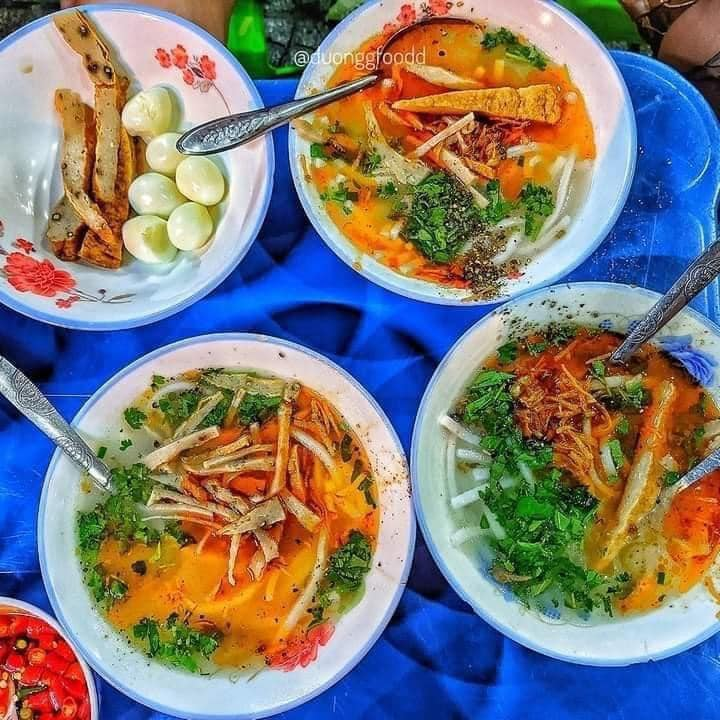

Bánh canh tại đây nổi bật với nước dùng được nấu từ nước luộc cá ngừ, mang lại vị ngọt thanh tự nhiên. Sợi bánh canh mềm mịn, kết hợp cùng chả cá, cá chiên, hành phi và các gia vị khác tạo nên hương vị đậm đà, khó quên. Quán phục vụ hai loại chính: bánh canh cá chiên và bánh canh chả trứng.
Quán tọa lạc tại số 82 - 84 Bùi Dương Lịch, phường Nại Hiên Đông, quận Sơn Trà, gần chân cầu Thuận Phước. Trước đây, quán nằm gần các cánh đồng, nên được gọi là "bánh canh ruộng".
Một tô bánh canh tại quán có giá từ 13.000 đồng, phù hợp với túi tiền của nhiều đối tượng khách hàng, từ sinh viên đến người lao động. Quán mở cửa từ 14h đến 23h30 hàng ngày. Vào giờ cao điểm, quán thường rất đông khách, nên bạn có thể đến sớm để tránh phải chờ đợi lâu.
Đặc biệt của quán này là mọi người tự phục vụ, tự đến quầy lấy bánh canh và topping khi tính tiền thì quán đếm tô và tính nhé!
Địa chỉ quán: 82 - 84 Bùi Dương Lịch, phường Nại Hiên Đông, quận Sơn Trà
Giờ mở cửa: 14:00 - 23:30
Giá tham khảo:Từ 1 - 100.000đ / người
Bản đồ: 📍 Xem trên Google Maps